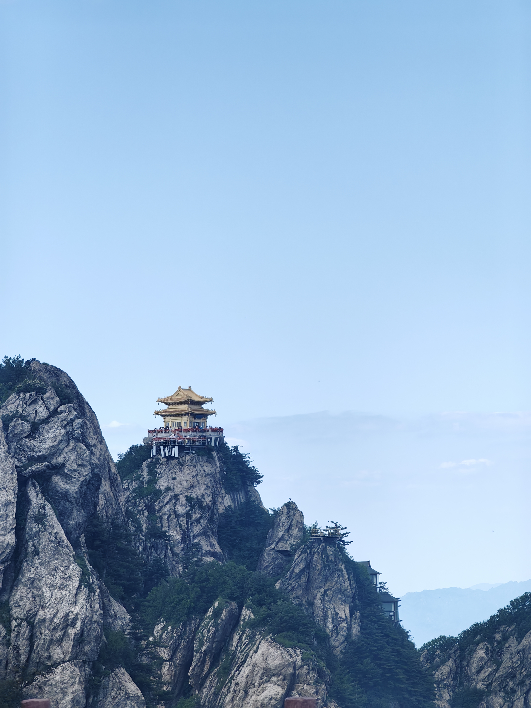

<!doctype html>
<html>
<head>
<meta charset="utf-8">
<title>西安</title>
</head>
<body background="../img/老君山3.jpg"
	  style="background-repeat: no-repeat;
			 background-attachment:fixed;
			 background-size: 100% 100%;">
	<style>
		.one{
			
			line-height: 60px;
			text-align: left;
			font-family: '华文行楷';
			font-size:60px;
		}
		.two{
			line-height: 20px;
			text-align: center;
			font-family: '微软雅黑';
			font-size:25px;
			background-color: #8a988e;
		}
		.three{
			line-height: 40px;
			text-align: center;
			font-family: '宋体';
			font-size:25px;
			background-color: #8a988e;

		}
	</style>
	<style>
        body {
            padding: 120px;
            background-color: #999;
        }

        button {
            margin: 8px;
            width: 120px;
            height: 48px;
            background-color:#F9F5DE;
            color: #fff;
            border: none;
            border-radius: 12px;
            cursor: pointer;
            /* 开启定位是为了给波纹动画元素使用 */
            position: relative;
            /* 必须加上超出隐藏，注释掉以后效果很明显 */
            overflow: hidden;
            /* hover过渡一下 */
            transition: all 0.3s;
        }

        button:hover {
            box-shadow: 0 0 18px rgba(255, 255, 255, 0.36);
        }

        .btn2 {
            background-color:#DFDDCE;
        }

        .btn3 {
            background-color:#7884A4;
        }

        .btn4 {
            background-color:#4B9D9D;
        }

        .btn5 {
            background-color:#AA79AA;
        }

        .btn6 {
            background-color: rgb(224, 126, 45);
        }

        .ripple {
            position: absolute;
            border-radius: 50%;
            background-color: rgba(255, 255, 255, 0.48);
            transform: scale(0);
            animation: ripple 240ms linear;
        }

        @keyframes ripple {
            to {
                transform: scale(2.4);
                opacity: 0.12;
            }
        }
    </style>
	
</body>
	<div class="one">我的旅程： 
	<button class="targetBtn"><a href="xian.html">西安</a></button>
    <button class="targetBtn btn2"><a href="chongqing.html">重庆</a></button>
    <button class="targetBtn btn3"><a href="laojunshan.html">老君山</a></button>
    <button class="targetBtn btn4"><a href="wuhan.html">武汉</a></button>
	<button class="targetBtn btn5"><a href="index.html">主页</a></button>
    <script>
        // 创建波纹函数，只要一点击就创建一个波纹
        function createRipple(event) {
            const button = event.target; // 获取事件对象button按钮
            const circle = document.createElement("div"); // 创建一个div标签用于表示一个波纹（波纹就是一个圆）
            const diameter = Math.max(button.clientWidth, button.clientHeight); // 取dom宽度和高度中的一个最大值，以最大值做直径
            const radius = diameter / 2; // 直径除以2即为半径 （若不理解这几行，可注释掉overflow: hidden;再点击按钮即明白）
            circle.style.width = circle.style.height = `${diameter}px`; // 以直径作为宽高
            circle.style.left = `${event.clientX - button.offsetLeft - radius}px`; // 设置定位的位置
            circle.style.top = `${event.clientY - button.offsetTop - radius}px`;
            circle.classList.add("ripple"); // classList加上类名既有动画效果了
            // 若有这个波纹动画圆dom以后，就移除这个dom再追加。若没有直接追加
            let ripple = button.querySelector('.ripple')
            if (ripple) {
                ripple.remove();
            }
            button.appendChild(circle); // 将这个波纹动画圆作为子元素追加到父元素button上（这样父元素相对定位，子元素绝对定位就生效了）
        }
        // 1. 获取将要点击的按钮dom数组
        const targetBtnArr = document.querySelectorAll('.targetBtn')
        // 2. 给数组中的每一项，即要点击的按钮dom绑定点击监听事件
        for (let i = 0; i < targetBtnArr.length; i++) {
            let targetBtn = targetBtnArr[i]
            targetBtn.addEventListener("click", createRipple);
        }
    </script>
	</div>

	
	<div class="two">
	
		____________
		
	</div>
	
	<div class="three">
	
		千米高峰，于华北平原拔地而起<br/>
		与金殿一同闪耀夺目的，是老君的传说<br/>
		夏有万物蓬勃，冬有银装素裹<br/>
		如此便是老君山
	
	</div>
</html>
